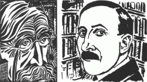

Beste Zweig lezeressen en – lezers,
Stefan Zweig verzamelde vrienden om zich heen. Hij koesterde ze en ontving ze hartelijk in zijn villa halverwege de Kapuzinerberg in Salzburg. Zoals bij iedereen kan de aard van vriendschap met de ene vriend sterk verschillen met die van een andere. Zo werd zijn band met Duitse schrijver Carl Zuckmayer gevoed door het feit dat zij tijdlang streekgenoten waren, in de relatie met schrijvers als bijvoorbeeld George Rendl en Andreas Latzko speelde de financiële ondersteuning die Zweig hen bood een rol, hij vereerde Albert Schweitzer en Romain Rolland en knoopte daarom een relatie met hen aan, Richard Strauss waardeerde hem zeer als tekstschrijver en beschermde hem tijdlang tegen de nazi’s en hij had een zeer persoonlijke relatie met Joseph Roth, ondanks het feit dat Roth ook veel belang hechtte aan de financiële hulp van Zweig.
Stefan Zweig was een aimabel, vredelievend mens en had zelden ruzie met anderen. Toch werd zijn vriendschap met de schrijver/dichter Emile Verhaeren jarenlang onderbroken door een heftige ruzie. Dat maakt de vriendschap met Verhaeren tot een bijzondere.
Piet Wackie Eysten schreef een boeiend essay over de relatie tussen Stefan Zweig en Emile Verhaeren. Met veel genoegen drukken wij hieronder zijn verhaal af.
Dirk Jansen

EMIL VERHAEREN EN STEFAN ZWEIG IN EEN HOUTSNEDE VAN FRANS MASEREEL
Stefan Zweig en Emile Verhaeren
door Piet Wackie Eysten
Admirez-vous les uns les autres!
Emile Verhaeren
Stefan Zweig is een jongeman van twintig als hij in augustus 1902 de Franstalige Vlaamse dichter Emile Verhaeren, dan 47 jaar oud, voor het eerst ontmoet. Op school al, het Wasa gymnasium in Wenen, had Zweig Verhaerens dichtbundel Les Flamandes gelezen en bewonderd. De positieve houding tegenover het leven, de actualiteit, de aanvaarding van de toekomst, schrijft hij in Die Welt von gestern, had hem geïnspireerd, de liefde voor de moderne wereld – ‘toute la vie est dans l’essor’ schreef Verhaeren – , die zo afstak tegen de romantische verheerlijking van het verleden. Met zijn een jaar eerder verschenen bundel Silberne Saiten had hij, nog geen twintig, in Wenen als dichter al naam gemaakt, zijn vertalingen van werk van Baudelaire en Verlaine waren al verschenen. Maar Verhaeren was in Oostenrijk en Duitsland nog totaal onbekend. Zweig had zich al wel aan vertalingen van enkele van diens gedichten gewaagd. Hij was pas zeventien toen hij in zijn enthousiasme en ontluikend zelfvertrouwen Verhaeren om toestemming vroeg zijn verzen in het Duits te mogen publiceren. De brief met het toestemmende antwoord, die uit Parijs kwam, heeft hij zijn leven lang bewaard.
In de zomer van 1902 reist Zweig naar België, ‘das kleine Land zwischen den Sprachen’. Hij wil proberen de door hem zo bewonderde dichter te ontmoeten. In Brussel treft hij hem niet. De beeldhouwer Charles van der Stappen vertelt hem dat Verhaeren maar zelden in Brussel is en liefst in Sint-Amands, zijn geboortedorp aan de Schelde, verblijft. Als hij met Van der Stappen en diens vrouw, die hem voor het middagmaal hebben uitgenodigd, zit te praten wordt er plotseling tegen het raam getikt, en – zo schrijft Zweig in zijn herinneringen Die Welt von gestern –
‘luid klingelde de bel. ‘Le voilà!, zei mevrouw Van der Stappen en stond op, en daar kwam hij binnen, met gedecideerde, zware stap: Verhaeren. Ik herkende meteen het mij van portretten allang bekende gezicht. Verhaeren kwam, zoals zo vaak, ook deze keer bij hen op bezoek, en toen ze hoorden dat ik hem overal tevergeefs had gezocht, hadden ze elkaar met een snelle blik duidelijk gemaakt dat ze daar niets van tegen mij zouden zeggen, maar mij met zijn komst zouden verrassen. En nu stond hij tegenover mij, lachend om de geslaagde streek waar ze hem van vertelden. Voor het eerst voelde ik de stevige greep van zijn gespierde hand, voor het eerst voelde ik zijn heldere, vriendelijke blik.’
Verhaeren is niet zomaar op bezoek, Van der Stappen werkt aan een portretbuste van de dichter, waar hij die middag de laatste hand aan wil leggen. De gastheer vraagt Zweig, als hij afscheid wil nemen, te blijven om tijdens de sessie in het atelier met Verhaeren, die anders zo moeilijk stil kan zitten, te converseren. In zijn Erinnerungen an Emile Verhaeren, die hij in 1916, kort na Verhaerens overlijden boekstaafde[1], beschrijft Zweig die eerste ontmoeting met zijn idool uitvoerig. Terwijl hij in het atelier met Verhaeren converseert, observeert hij ook Van der Stappen, die ‘met opgestroopte mouwen en spieren als van een slager’, het portret van zijn vriend voltooit. ‘Gedurende die eerste kennismaking leerde hij van de Fransschrijvende Vlaming houden, zoals hij het zijn hele leven zou doen’, schrijft John Gheeraert.[2] Zweig moet denken aan Goethes uitspraak, dat je een kunstwerk pas werkelijk kent als je het hebt zien ontstaan. Ligt hier misschien de bron van de verzameling van met correcties volgekrabbelde manuscripten van beroemde kunstenaars, die hij in de loop van zijn leven zal vergaren?
Deze ontmoeting met de bewonderde dichter maakte op de 20-jarige Zweig grote indruk. ‘Het was de eerste grote dichter die ik in levende lijve ontmoette’, schrijft hij in zijn Erinnerungen an Emile Verhaeren. ‘Zelf was ik er nog lang niet zeker van of in mij een dichter stak, ‘ein Berufener des Wortes’, of alleen nog maar de hoop dat te worden.’
—
Emile Verhaeren is op 21 mei 1855 geboren in Sint-Amands, een dorp aan de Schelde in de zuidwesthoek van de gemeente Antwerpen. Thuis wordt Frans gesproken, zoals destijds gebruikelijk in de betere kringen. Met Nederlands heeft Emile alleen op de lagere school kennis gemaakt. Hij gaat aan de Katholieke Universiteit in Leuven rechten studeren, maar zijn literaire belangstelling is groter dan die voor het rechtsbedrijf. Hij begint weliswaar aan een advocatencarrière, op het kantoor van een zekere mr. Edmond Picard in Brussel, maar debuteert als dichter in 1883 met de bundel Les Flamandes, een lofzang op het Vlaamse platteland, geïnspireerd door de uitbundige taferelen uit de Vlaamse schilderkunst van de 16e en 17e eeuw. Hij treedt toe tot de redactie van het tijdschrift ‘L’Art moderne’, waarvan ook Mr. Picard lid is. De ene gedichtenbundel na de andere verschijnt van zijn hand, in grote oplagen. In 1886 verschijnt Les Moines, in een sfeer van religieuze mystiek, en tussen 1888 en 1891 de trilogie Les Soirs, Les Débâcles en Flambeaux noirs, in een duistere sfeer van zwaarmoedigheid. Het is een periode waarin Verhaeren een ernstige zenuwcrisis doormaakte. ‘… naar huis gaan, met de vuisten mijn ogen dichtdrukken, lange tijd zo blijven zitten om dieper en dieper door te dringen in het donker van mijn pupillen…’, schrijft hij in 1889 over zijn ontreddering.[3]
In 1891 trouwt hij met Marthe Massin, een kunstenares uit Luik, waarna de sombere sfeer uit zijn werk verdwijnt. Zijn bundel Les heures claires (1896), een verzameling liefdesgedichten, draagt hij aan haar op. Hij publiceert in de jaren daarna wederom een trilogie, maar nu met sociaal engagement en nadruk op de kracht van de massabeweging en de opkomst van de moderne stad: Les campagnes hallucinées, Les villes tentaculaires en Les Aubes. Zijn gedicht Le Passeur d’eau (De veerman), onderdeel van zijn bundel Les villages illusoires, is beroemd geworden. Het gaat over een veerman op de Schelde die, ondanks het verlies van zijn riemen en andere tegenslagen bij het oversteken van de rivier, het strootje dat hij tussen zijn tanden houdt niet verliest. Het past in Verhaerens optimistische levensvisie. Aimez-vous les uns les autres, en Admirer c’est grandir, zijn typerende regels in zijn oeuvre.
In 1898 – het jaar waarin de dan 16-jarige Oostenrijkse scholier Stefan Zweig voor eerst zijn gedichten onder eigen naam publiceert – verwisselt Verhaeren de Belgische hoofdstad voor de Franse: hij gaat naar Parijs, maar vestigt zich al vrij snel in de voorstad Saint-Cloud. Steeds als Zweig later in Parijs is, probeert hij zijn vriend daar op te zoeken. Verhaeren heeft ook een buitenhuisje bij Caillou-qui-bique, een gehucht bij Angre in de Belgische provincie Henegouwen, dicht tegen de Franse grens, verscholen in een groene oase achter de Borinage, de sombere mijnstreek van België.[4] In dat afgelegen oord brengt Zweig vanaf 1904 ieder jaar de zomer door om samen met Verhaeren diens nieuwste gedichten te vertalen. In het voorjaar was het er voor Verhaeren, die aan hooikoorts leed, een fysieke kwelling, schrijft Zweig, ‘werken kon hij dan niet; het was voor hem de meest gehate periode van het jaar.’ Maar ’s zomers maken zij er lange wandelingen in de rustieke, bosrijke omgeving. In zijn Erinnerungen an Emile Verhaeren beschrijft Zweig zijn aankomst aan het stationnetje van Angreau. Vandaar is het een halfuurtje lopen door bos en hei. Zijn gastheer staat hem op te wachten, op klompen, gekleed in een flodderige broek en een arbeiderskiel, een knoestige wandelstok in de hand, het tenue waarin ook de Amerikaanse dichter Walt Whitman zich placht te hullen.
Zweig in Caillou-qui-bique
Evenals Zweig is Verhaeren een bewonderaar van de poëzie van Walt Whitman (1819-1892), de dichter van de beroemde bundel Leaves of grass (1855). Ook Whitmans werk, net als dat van Verhaeren, wordt gekenmerkt door de vitaliteit, de directheid die eruit spreekt. Hoezeer ook Verhaeren, evenals Whitman, zijn hart verpand had aan de moderne tijd, de ontwikkeling van moderne steden en de geavanceerde techniek en daar de poëtische aspecten van tot uitdrukking wist te brengen (vergelijkbaar met de poëzie van W.H. Auden in de twintigste eeuw) blijkt onder andere uit een anekdote die Zweig vertelt in Die Welt von gestern. Als Verhaeren in augustus 1905 hoort dat een van de nieuwste vindingen van de mensheid, de Zeppelin, bij Stuttgart is verongelukt, betekent dat bijna zoveel als een persoonlijke nederlaag voor hem. ‘Verhaeren had tranen in zijn ogen’, schrijft Zweig. ‘als (…) Europeaan, als mens van onze tijd, onderging hij de gemeenschappelijke triomf over de elementen evenzeer als de gemeenschappelijke beproeving.’
Zweig schrijft een korte monografie over zijn Belgische vriend, die hij ‘de troubadour van het moderne leven’, noemt. Het stuk verschijnt in 1910, tegelijk met twee banden met zijn vertalingen, Ausgewählte Gedichte en Drei Dramen, de toneelstukken Le Cloître, Philippe II en Hélène de Sparte. Twee jaar later geeft uitgeverij Insel Verlag, in 1901 opgericht door Anton Kippenberg, die jarenlang Zweigs uitgever zou blijven, in een eerste oplage van maar liefst 20.000 exemplaren, zijn bundel Hymnen an das Leben uit, de vertaling van Verhaerens Hymnes à la vie. Dit boek zou aan Zweigs leven, kort na verschijnen, op onverwachte wijze een beslissende wending geven.
Op een warme zomeravond in juli 1912 dineert Zweig in Wenen met een vriend in de tuin van restaurant Riedhof. Hij ziet dat een jonge vrouw aan het tafeltje naast hem een boek krijgt overhandigd. Hij herkent het: het is zijn eigen Hymnen an das Leben. Zijn glimlach van herkenning wordt stil beantwoord. Twee dagen later krijgt hij een brief, ondertekend met slechts de initialen F.M.v.W. en een postbusnummer[5] (een kleine tien jaar later zou hij zijn novelle Brief einer Unbekannten schrijven): ‘Gisteren zat u bij Riedhof naast mij toen een vriend mij uw Hymnen an das Leben gaf’. De briefschrijfster is Friderike von Winternitz, die niet veel later de vrouw in zijn leven zal worden. In haar herinneringen[6] memoreert Friderike deze eerste ontmoeting natuurlijk ook. ‘Hij was niet meer de bloedjonge bohemien van vroeger, schrijft zij, maar een verzorgde, good-looking man, kennelijk in staat een vrouw met een enkele blik te zeggen wat woorden overbodig maakt.’
Veel moeite geeft Zweig zich intussen om Verhaeren, wiens dichtbundels in het Frans soms oplagen halen van 50.000, in het Duitse taalgebied meer bekendheid te geven. Hij organiseert een lezingentournee voor Verhaeren, die van 28 februari tot 17 maart 1912 plaatsvindt. Zweig bespreekt de zalen, regelt de honoraria, de publiciteit en alle verdere praktische aangelegenheden. Zijn inspanningen en de diverse inmiddels in Duitsland en Oostenrijk verschenen vertalingen van zijn hand, werpen hun vruchten af. De eerste voordrachtavond, in Hamburg, is een groot succes. Een publieke omhelzing van de Franstalige Belg Verhaeren en de Duitse dichter Richard Dehmel verzinnebeeldt de verbroedering van de Franse en de Duitse dichtkunst. In Berlijn, München en Wenen is het niet anders. Ook daar oogsten Verhaerens lezing met de voor hem typerende titel La culture de l’enthousiasme en zijn voordracht van gedichten veel succes. Hij wordt op straat herkend, en zelfs gefotografeerd, schrijft hij aan zijn vrouw Marte, en de keizer zou zeker zijn gekomen, heeft hij gehoord, ‘als hij niet in Cuxhaven was.’
Maar Zweig beseft dat hij na al zijn inspanningen voor het werk van zijn Belgische vriend nu toch ook vooral aan zichzelf en zijn eigen werk moet denken. Weliswaar heeft hij over gebrek aan succes niet te klagen. Zijn verhalenbundels, onder andere Die Liebe der Erika Ewald en Erstes Erlebnis zijn goed ontvangen, zijn toneelstuk Der verwandelte Komödiant heeft in mei 1912 zijn première beleefd, in oktober is zijn treurspel Das Haus am Meer in het Burgtheater in Wenen in première gegaan. Maar toch: ‘Ik loop tegen de dertig’, schrijft hij in november 1912 aan Verhaeren, ‘de leeftijd om werk te voltooien en niet langer te experimenteren.’
In het voorjaar van 1913 is Zweig weer in Parijs, waar hij behalve Rolland natuurlijk ook Verhaeren opzoekt. Hij wil er werken aan de vertaling van diens monografie over Rubens. Hij nodigt hen beiden, samen met Rainer Maria Rilke en Leon Bazalgettte, de vertaler van Walt Whitman, met wie hij eveneens bevriend is, uit voor een lunch in zijn hotel Beaujolais, gelegen aan de tuinen van Palais Royal. Zij sturen gezamenlijk een door alle vijf ondertekende briefkaart aan Friderike.
In de zomer van 1914 verblijft Zweig in De Haan, een kleine badplaats bij Oostende. Zijn koffer staat gepakt klaar om door te reizen naar Caillou-qui-bique voor zijn zomerse vertaalconclaaf met Verhaeren. Maar dan marcheren Duitse troepen België binnen en breekt de Wereldoorlog uit. Hals over kop weet Zweig de allerlaatste trein naar Wenen te halen om aan het oorlogsgeweld te ontkomen. Hij beschrijft die terugreis, Heimfahrt nach Österreich, in de Neue Freie Presse van 1 augustus. Enkele dagen later prijst hij in dezelfde krant, onder de kop Ein Wort von Deutschland, Oostenrijks ‘Schwertbruderschaft’ met Duitsland, ontstaan ‘aus freundlicher Nachbarschaft’, met de omineuze openingszin ‘Mit beiden Fäusten, nach rechts und links, muβ Deutschland jetzt zuschlagen’. Maar in zijn dagboek spreekt hij andere taal; is hij daar eerlijker? Op 10 augustus schrijft hij over zijn Belgische vrienden: ‘Zwischen mir und meinen Freunden ist da etwas auf Jahre hinaus zerstört, vielleicht auf immer.’ Wat Verhaeren betreft zouden die woorden van profetische betekenis blijken te zijn: Zweig zou hem niet meer terugzien.
Op 19 september 1914 verschijnt in het Berliner Tageblatt Zweigs beroemd geworden artikel An die Freunde im Fremdland, waarmee hij afscheid neemt van zijn vrienden, die nu immers, zo schrijft hij – hoezeer hij zich ook aan hen verplicht voelt – zijn vijanden zijn geworden. Romain Rolland, de diepgewortelde humanist en pacifist, is door het uitbreken van de oorlog overvallen in Zwitserland, waar hij zijn krachten in dienst stelt van het Internationale Agentschap voor Krijgsgevangenen van het Rode Kruis in Genève. Het geldbedrag, verbonden aan de Nobelprijs
voor de Literatuur, die hij in 1915 ontvangt, schenkt hij aan die organisatie. ‘Ik blijf Europa beter trouw dan u, beste Stefan Zweig’, reageert hij, ‘ik neem van géén van mijn vrienden afscheid!’ Tot het oprichten van een Europees ‘moreel parlement’ tegen het nationalisme, onder aanvoering van Rolland, zoals Zweig heeft voorgesteld, met vertegenwoordigers van diverse Europese landen, zoals Gorki voor Rusland, Verhaeren voor België, Gerhart Hauptmann voor Duitsland, Hermann Bahr voor Oostenrijk, Frederik van Eeden voor Nederland, Shaw of Wells voor Engeland, komt het echter niet. Wel verschijnt in 1915 Rollands beroemde pamflet Au-dessus de la mêlée (‘Boven het krijgsgewoel’), een gloeiend pleidooi voor vrede en onafhankelijkheid, waarin hij zowel Frans als Duits patriotisme veroordeelt.
Maar hoe anders reageert hun Belgische vriend op de gebeurtenissen. Zweig is verbijsterd als hij hoort dat Verhaeren zich fel tegen de Duitse agressor heeft gekeerd. Zijn bewondering voor Duitsland is omgeslagen in haat, ‘de grootste vergissing van zijn leven’, schrijft Zweig in zijn Erinnerungen an Emile Verhaeren. De zo succesvolle tournee in dat land lijkt vergeten. ‘Een afschuwelijk bericht’, noemt Zweig het in zijn dagboek als hij hoort dat Verhaeren werkt aan een boek over het verscheurde België, La Belgique sanglante, een bundel oorlogsessays. De Duitsers worden daarin van gruwelijke misdaden beschuldigd, zoals onder andere het afsnijden van kindervoetjes! ‘Zulke ellendige leugens in een gedicht vastleggen: ik weet werkelijk niet of ik daar ooit met hem zal kunnen praten’, noteert hij op 9 november 1914 in zijn dagboek. Het jaar daarop verschijnt Verhaerens gedichtenbundel Les ailes rouges de la guerre: de ‘ailes’ zijn de met bloed bevlekte vleugels van de Duitse adelaar. Zweig is diep bedroefd, ‘een kleine catastrofe in mijn bestaan’, noemt hij Verhaerens ‘verraad’ van hun vriendschap. Diens anti-Duitse gedichten vindt hij ‘het domste en schandelijkste wat je je kunt voorstellen.’ In maart 1915 heeft hij ‘weer zo’n walgelijk pamflet van Verhaeren gelezen: ik ben vastbesloten definitief met hem te breken, ik kan me niet voorstellen ooit nog met hem te kunnen spreken.’
Verhaeren is het oorlogsgeweld ontvlucht naar Engeland. Hij houdt er voordrachten, waarbij de jonge Nederlandse journalist Jan Greshoff hem bijstaat. In The Observer verschijnt een gedicht van zijn hand met dezelfde titel als zijn boek, La Belgique sanglante. In maart is hij terug in België. Op uitnodiging van koning Albert I – Koning-Soldaat genoemd omdat hij bij het uitbreken van de oorlog zijn troepen niet in de steek heeft gelaten, maar in de loopgaven in West-Vlaanderen bij hen bleef – brengt hij enkele malen een bezoek aan het frontgebied aan de IJzer.
Het is een opluchting als Zweig in augustus 1916, na een tocht door Polen en het toenmalige Galicië (nu West-Oekraïne), in opdracht van de Neue Freie Presse, waar hij oog in oog is komen te staan met de verschrikkingen van de oorlog, bij thuiskomst in Wenen de groeten ontvangt van Verhaeren, hem overgebracht door Rolland. ‘Een teken van ontluikende bezinning’, noemt hij het in een brief aan zijn vriend Paul Zech, die hij via Verhaeren heeft leren kennen. Het lijkt erop dat hun verstandhouding zich zal herstellen.
Maar dat heeft niet zo mogen zijn. Drie maanden later ontvangt Zweig het bericht van Verhaerens overlijden. Op 27 november is de 61-jarige dichter, door een ongelukkige stap op het perron in het station van Rouen, waar hij de trein naar Parijs wilde nemen, onder de wielen geraakt van de locomotief. Zweig vraagt Rolland zijn verdriet over het verlies van zijn ‘meest geliefde en vaderlijke vriend’ aan diens weduwe over te brengen. En aan Paul Zech schrijft hij op 6 december:
‘Es war ein Stück Leben von mir, dieser Mensch; alles, was gut ist in mir, danke ich ihm, er hat mich gelehrt, daβ man einfach sein müsse als Mensch, um groβ als Dichter zu sein; eine ähnliche Schlichtheit ging von ihm aus und eine Herzlichkeit ohne Ende.’
XXXXXXXX
[1] In 1917, direct na Verhaerens overlijden, in kleine oplage onder vrienden verspreid, pas twintig jaar later opgenomen in Begegnungen mit Menschen, Büchern, Städten.
[2] John Gheeraert, Stefan Zweig, Een Weense flaneur in Vlaanderen.
[3] Emile Verhaeren, Herberg De Goede Dood, vertaling Jan H. Mysjkin.
[4] Het huis werd, nota bene op de laatste dag van de oorlog, totaal verwoest, waarbij, zo schrijft Zweig in zijn Erinnerungen an Emile Verhaeren, het grootste deel van Verhaerens manuscripten en zijn correspondentie ‘door stupide granaten’ werden verwoest.
[5] Tien jaar later zou Zweigs novelle Brief einer Unbekannten verschijnen.
[6] Friderike Zweig, Stefan Zweig. Wie ich ihn erlebte.